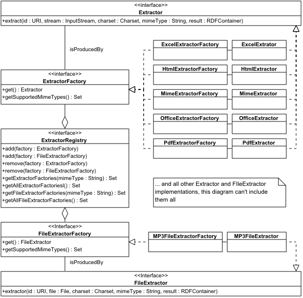

Extractors extract the full-text and/or metadata of a particular document type (one or more MIME types). They operate on an InputStream, optionally accompanied by a MIME type and/or a Charset to tune the processing, and produce a set of RDF statements describing the full-text and metadata.
The extractor classes are summarized in the following diagram:
The current set of Extractors focus on typical document-like formats, such as word processor documents, spreadsheets and presentations. Future implementations are planned that also target images, videos and sound files.
Below is a list of available Extractors, their external dependencies and remarks.
These implementations may vary in performance and extraction quality. Some use dedicated external libraries for handing a specific document format or family of document formats, others merely use a heuristic algorithm to extract readable text from a binary stream.
| Extractor | Dependencies | Remarks |
|---|---|---|
| ExcelExtractor | Poi libraries | Tests indicate that Excel 97 and higher are supported. Both the full-text and metadata are retrieved. |
| HtmlExtractor | Htmlparser | -- |
| MimeExtractor | JavaMail | An Extractor for message/rfc822 and message/news documents. Both the most significant headers and the body are extracted. Any attachments are ignored. |
| OfficeExtractor | Poi libraries | An Extractor that can be used as a fall-back when the MIME type identifier was able to identify a document as an MS Office document but was not able to further classify it, e.g. as an MS Word file. Both text and metadata are extracted. |
| OpenDocumentExtractor | -- | Extracts full-text and metadata from OpenDocument files and is backwards compatible with older OpenOffice (1.x) and StarOffice (6.x and 7.x) documents. |
| PdfExtractor | PDFBox | Extracts full-text and metadata from all PDF versions. |
| PlainTextExtractor | -- | -- |
| PowerPointExtractor | Poi libraries | Text and metadata are extracted. Text extraction is noisy but sufficient for text indexing, if you're willing to accept that your index will contain non-word symbols. |
| PresentationsExtractor | Poi libraries | Apparently Presentations files can have an OLE structure similar to MS Office files or use a document structure similar to WordPerfect. In both cases text can be extracted. In the first case metadata is also extracted. |
| PublisherExtractor | Poi libraries | Poi is only used for document metadata retrieval, text retrieval uses a heuristic string extraction algorithm. |
| QuattroExtractor | Poi libraries | Only recent Quattro Formats, as used by Quattro Pro 7 and Quattro Pro X3, are supported as these have a structure similar to MS Office documents. Older versions are not supported. Poi is only used for metadata retrieval, text retrieval uses a heuristic string extraction algorithm in both cases. |
| RtfExtractor | None (uses the JRE's RTFEditorKit) | Only document text is extracted. Otherwise no known issues. |
| VisioExtractor | Poi libraries | Poi is only used for document metadata retrieval, text retrieval uses a heuristic string extraction algorithm. |
| WordExtractor | Poi libraries | Tests indicate that Word 97 and higher are supported. Both text and metadata are extracted. |
| WordPerfectExtractor | -- | Implementation only extracts full-text. Text is extracted from WordPerfect documents from version 4.2 up to WordPerfect X3 (tested with 4.2, 5.0, 5.1/5.2 and X3, all created using WordPerfect X3), except for the 5.1/5.2 Far East format. Tests revealed that for WordPerfect 5.0 and 5.1 the document metadata also ends up at the start of the extracted full-text. |
| WorksExtractor | -- | Implementation only extracts text and apparently only works well on Works 3.0 and 4.0 documents and Works 4.0/2000 spreadsheets. Other versions typically produce garbage, if anything at all. |
| XmlExtractor | -- | Extracts all PCDATA and attribute values in the order in which they appear in the document. |
Note regarding the Poi libraries: in accidental cases Poi cannot process a document correctly, leading to some sort of Exception. In that case the Extractor typically catches and disposes of the Exception and falls back to applying a heuristic string extraction algorithm on the binary stream, which very often works surprisingly well on MS Office formats.
The following code demonstrates how to apply an Extractor on a given File and dump the extraction results to System.out (using NTriples encoding):
1 public class ExtractorExample {
2 public static void main(String[] args) throws Exception {
3 // create a MimeTypeIdentifier
4 MimeTypeIdentifier identifier = new MagicMimeTypeIdentifier();
5
6 // create an ExtractorRegistry containing all available
7 // ExtractorFactories
8 ExtractorRegistry extractorRegistry = new DefaultExtractorRegistry();
9
10 // read as many bytes of the file as desired by the MIME type identifier
11 File file = new File("somefile.someextension");
12 FileInputStream stream = new FileInputStream(file);
13 BufferedInputStream buffer = new BufferedInputStream(stream);
14 byte[] bytes = IOUtil.readBytes(buffer, identifier.getMinArrayLength());
15 stream.close();
16
17 // let the MimeTypeIdentifier determine the MIME type of this file
18 String mimeType = identifier.identify(bytes, file.getPath(), null);
19
20 // skip when the MIME type could not be determined
21 if (mimeType == null) {
22 System.err.println("MIME type could not be established.");
23 return;
24 }
25
26 // create the RDFContainer that will hold the RDF model
27 URI uri = URIImpl.create(file.toURI().toString());
28 Model model = new RepositoryModel(false);
29 model.open();
30 RDFContainer container = new RDFContainerImpl(model, uri);
31
32 // determine and apply an Extractor that can handle this MIME type
33 Set factories = extractorRegistry.get(mimeType);
34 if (factories != null && !factories.isEmpty()) {
35 // just fetch the first available Extractor
36 ExtractorFactory factory = (ExtractorFactory) factories.iterator()
37 .next();
38 Extractor extractor = factory.get();
39
40 // apply the extractor on the specified file
41 // (just open a new stream rather than buffer the previous stream)
42 stream = new FileInputStream(file);
43 buffer = new BufferedInputStream(stream, 8192);
44 extractor.extract(uri, buffer, null, mimeType, container);
45 stream.close();
46 }
47
48 // add the MIME type as an additional statement to the RDF model
49 container.add(DATA.mimeType, mimeType);
50
51 // report the output to System.out
52
53 container.getModel().writeTo(new PrintWriter(System.out),
54 Syntax.Ntriples);
55
56 }
57 }
58